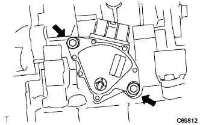
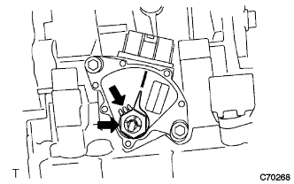
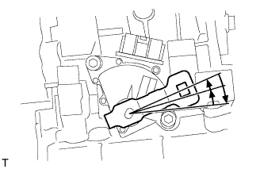
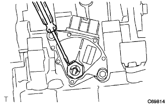
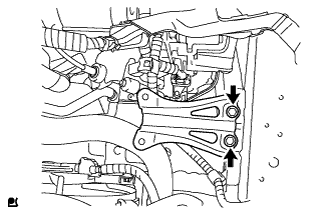
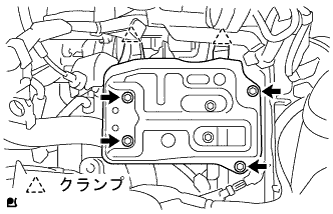
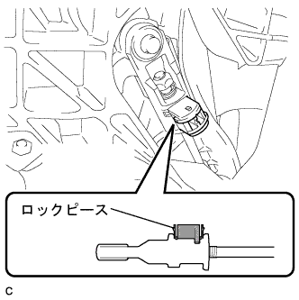

Neutral Start Switch Assembly Installation |
| 1. Install Neutral Start Switch Assembly |
 |
Temporarily install the neutral start switch assembly with the 2 bolts.
 |
Install the nut and nut stopper.
 |
Temporarily install the control shaft lever, turn it clockwise until it stops, then turn it counterclockwise 2 notches from that position to the N position, and remove the control shaft lever.
 |
Align the neutral basic line with the protrusion of the nut stopper, and fully tighten the 2 bolts.
 |
Using a flat-head screwdriver, stake the claws of the nut stopper.
 |
Install the control shaft lever and spring washer, and tighten the nut.
Connect the neutral start switch assembly connector.
| 2. Install Transmission Control Cable Assembly |
 |
Install the transmission control cable to the control shaft lever with the nut.
Secure the transmission control cable to the bracket with a new clip.
| 3. Install Battery Carrier NO.2 |
 |
Install battery carrier No.2 with the 2 bolts.
| 4. Install Battery Carrier |
 |
Install the battery carrier with the 4 bolts.
Install the wire harness with the 2 clamps.
Install the battery tray.
| 5. Install Battery |
Install the battery to the vehicle.
Install the insulator.
 |
Install the battery clamp with the bolt and nut.
Connect the battery positive terminal with the nut. (*1)
| 6. Install Radiator Upper Air Deflector |
Install the radiator upper air deflector with the 8 clips.
| 7. Connect Battery Negative Terminal |
| 8. Setting Procedure When Disconnecting/Reconnecting Battery Terminal |
)| 9. Inspect Shift Lever Position |
Turn IG ON and depress the brake pedal.
When shifting the shift lever to each position, check that the shift lever operates smoothly, moves into each position with a positive feel, and the position indicator shows the position correctly.
Start the engine, and check that the vehicle moves forward when shifting from the N position to the D position, and moves backward when shifting to the R position.
| 10. Adjust Shift Lever Position |
Apply the parking brake and move the shift lever to the N position.
Remove the instrument panel finish panel lower.
(see)
 |
Disconnect the cable end from the shift lock control unit.
 |
Using a thin-bladed screwdriver, pull out the stopper of the transmission control cable, turn the nut approximately 180° counterclockwise, and while holding the nut, disconnect the transmission control cable from the shift lever retainer.
 |
While pushing the claw of the lock piece, hold down the claw on the back side and push up the lock piece from the back side.
Turn the nut of the transmission control cable 180° counterclockwise, and while holding the nut, push in the stopper until it clicks 2 time.

Install the cable outer of the transmission control cable to the shift lever retainer, check that the spring is at position A as shown in the illustration, and push in the stopper.

 |
Install the cable end to the shift control unit.
 |
Push the lock piece into the adjuster case to lock it.
After adjustment, inspect the operation, and if there is a problem, adjust again.
Install the instrument panel finish panel lower.
(see)
| 11. Inspect Neutral Start Switch Assembly |
Apply the parking brake and turn the ignition switch ON.
Depress the brake pedal and check that the engine starts only when the shift lever is in the N or P position, and does not start in any other position.
Check that the back-up lights come on and the reverse position warning buzzer sounds only when the shift lever is in the R position.
If there is a malfunction, adjust the neutral start switch assembly.
| 12. Adjust Neutral Start Switch Assembly |
|
Move the shift lever to the N position.
Loosen the 2 bolts of the neutral start switch assembly.
Move the neutral start switch assembly to align the neutral basic line with the protrusion of the nut stopper.
Tighten the 2 set bolts.
Fully tighten the nut of the transmission control cable.
After adjustment, inspect the neutral start switch assembly.